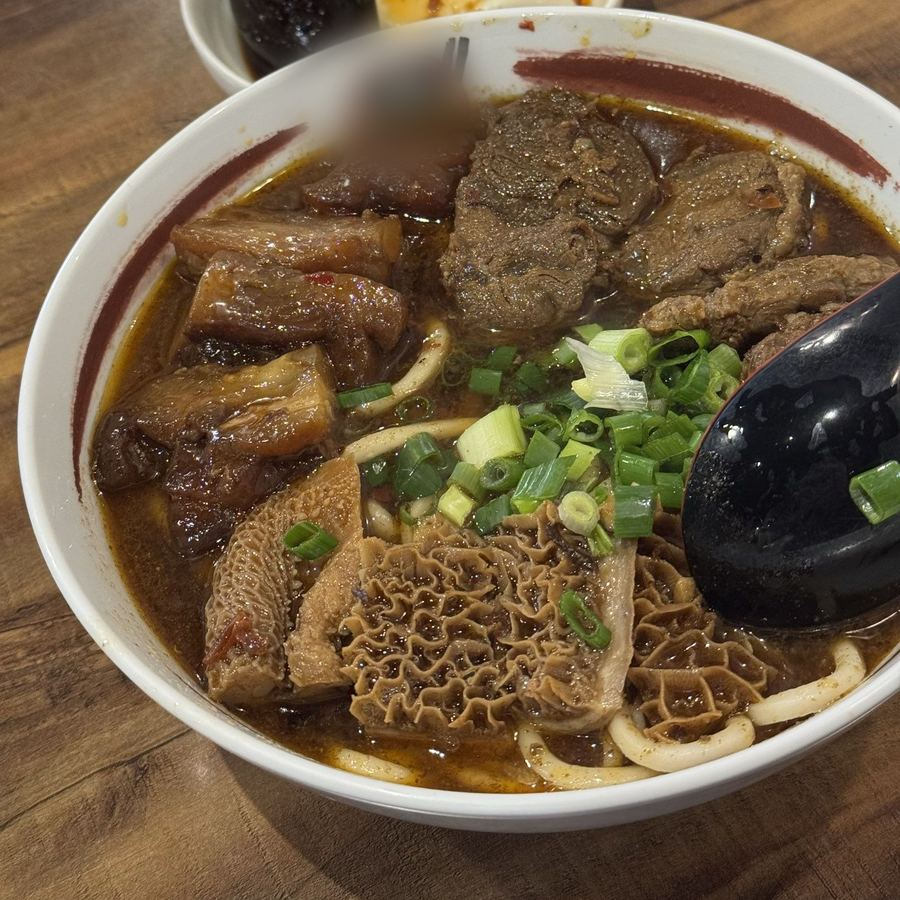
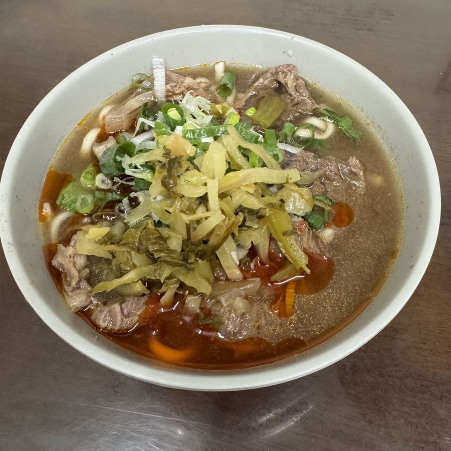
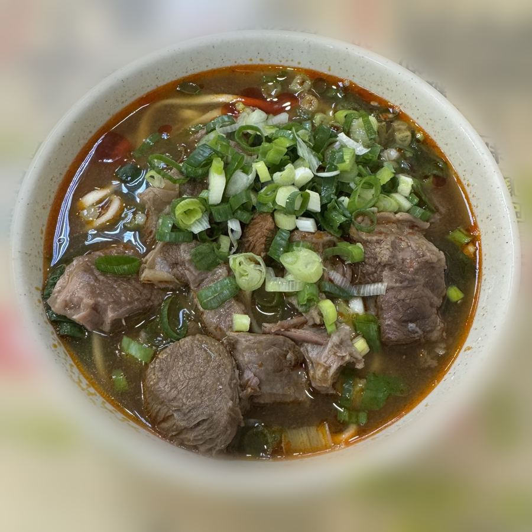
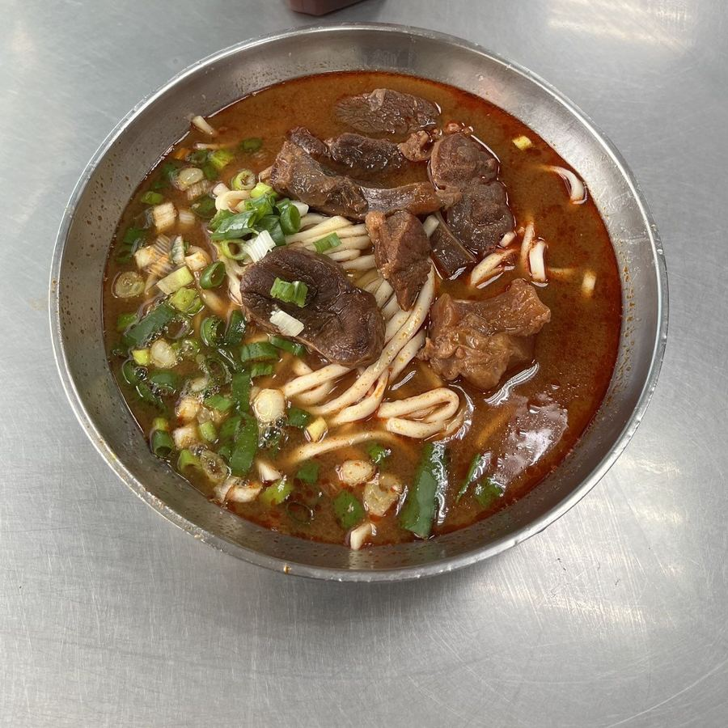
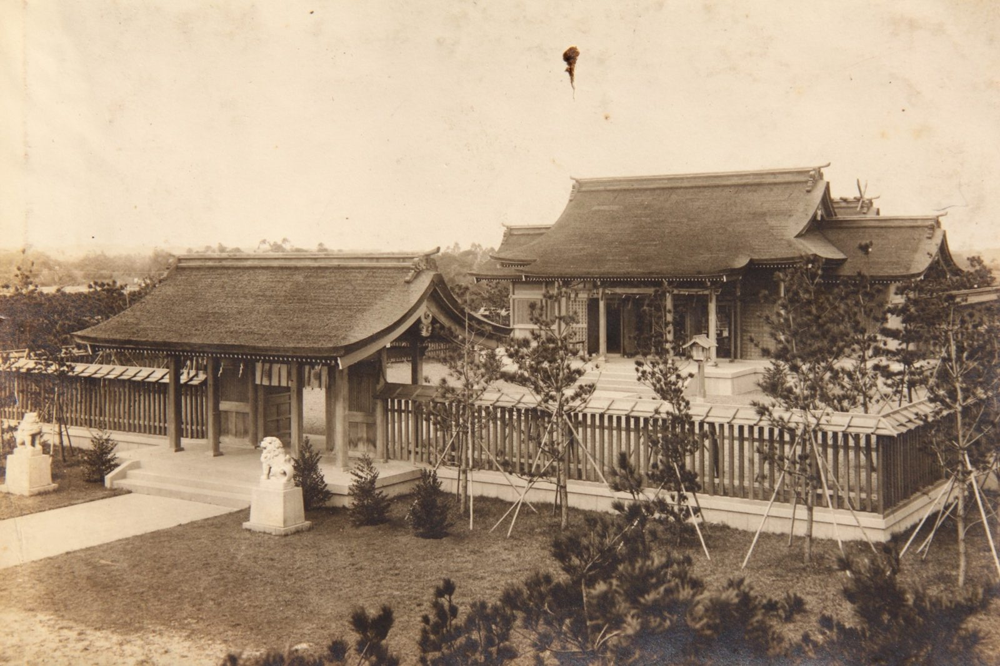
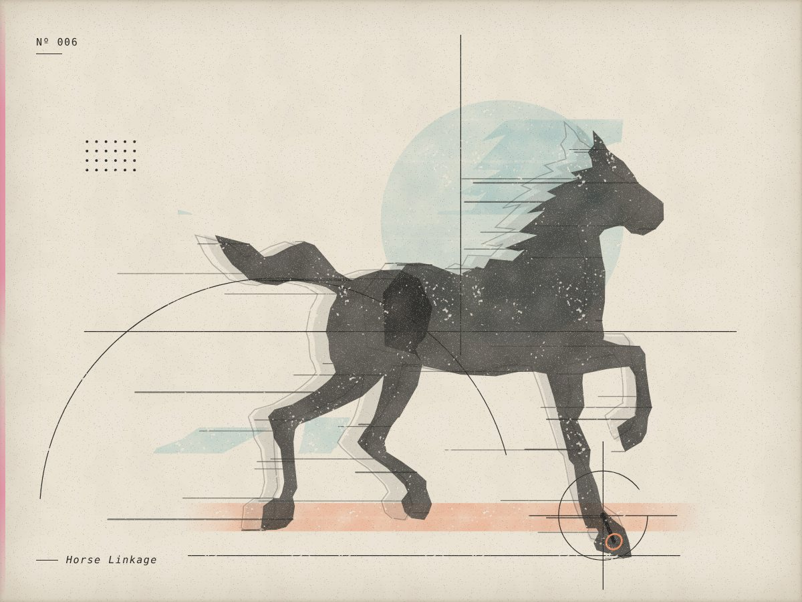
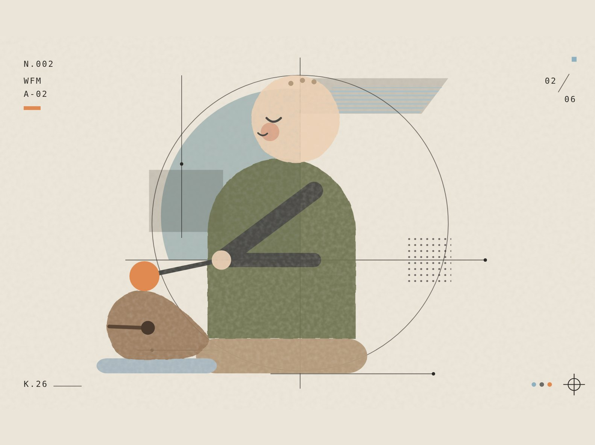
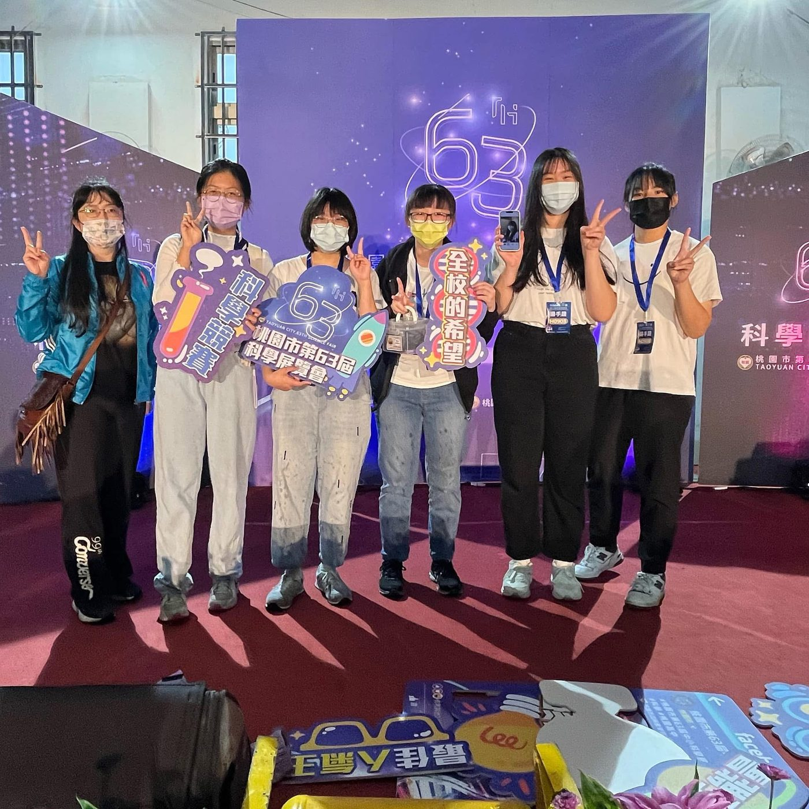
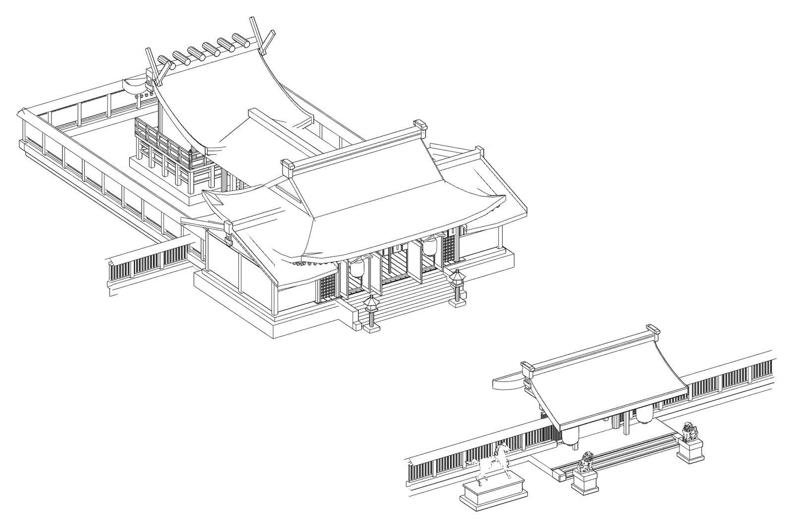
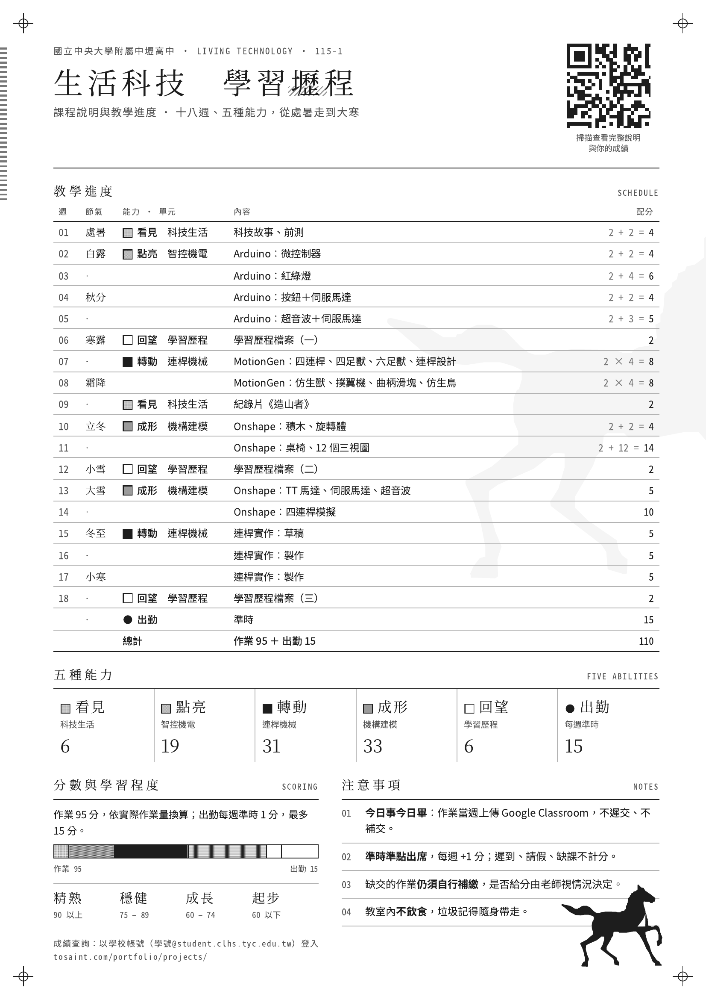

好奇心，才是第一個指令Curiosity Is the First Prompt
一位生活科技老師的兩小時分享。從四碗牛肉麵開始：AI 可以評論一張照片，卻吃不到一碗麵的故事。當答案越來越便宜，真正稀缺的是想問的問題。A two-hour talk by a technology teacher. It starts with four bowls of beef noodles: AI can rate a photo, but it cannot taste the story behind a bowl. When answers get cheap, the questions are what count.
這一頁可以往下讀，也可以按 P 播放成簡報。Read it as a page, or press P to play it as slides.
好奇心，
才是第一個指令Curiosity is the first prompt
一位生活科技老師的 AI 教學實驗 · A technology teacher's experiments with AI
中壢的四碗牛肉麵，哪一碗最好吃？Four bowls of beef noodles in Zhongli. Which one tastes best?




再問 AINow ask AI
可是，AI 一口都沒吃過。But AI has never tasted any of them.
以上為預先寫好的示範評語；現場可以改成直接問 AI。 · Sample text written in advance; on the day, ask AI live.
揭曉The reveal
A 是我兒時的回憶。 · A is the bowl from my childhood.
吃的是故事。What we taste is the story.
答案變便宜了，經驗沒有。Answers got cheap. Experience did not.
換一個問題：如果這家老店生意越來越差，我想幫它？Ask a different question: what if this old shop is struggling, and I want to help?
做海報
AI 生出十張，選哪一張靠你的眼光。AI makes ten; your eye picks one.
線上點餐
點餐、加總、出單，流程一次理清。Order, total, ticket: the whole flow made clear.
出餐 SOP
有步驟的事，AI 做得很好。Work with clear steps is where AI shines.
同一個 AI：第一個問題它只能猜，第二個問題它是好幫手。Same AI: it could only guess the first question; it is a real help with the second.
當答案不再稀缺When answers are no longer scarce
好的問題，就變得珍貴。Good questions become precious.
四種未知的問題Four kinds of unknown
我不知道Known, just not to me
壢馬連桿When can a linkage turn a full circle?
被整理出來Not yet put together
學習壢程One page for schedule, grades and portfolio
探索與驗證Must be explored and checked
中壢神社How tall was the vanished shrine?
還沒被定義The question itself is unclear
今天的題目What should schools teach now?
越往右，人要負責的越多。點卡片可翻面。 · The further right, the more is on us. Tap a card to flip it.
AI 降低的是執行門檻，不是判斷門檻AI lowers the bar for doing, not for judging
示意圖，不是數據。 · An illustration, not data.
只改曲柄，頭能擺更大、又能整圈轉嗎？Change only the crank: can the head swing more and still turn a full circle?
其他三根固定：連桿 11、搖桿 8、固定桿 11 cm。 · Other bars fixed: coupler 11, rocker 8, ground 11 cm.
先猜，再拉，最後剪紙板做出來。Guess first, then slide, then cut it from card.
一張老照片，四條路One old photo, four paths

給國文老師的例子：雨天的校園For Chinese teachers: the campus on a rainy day
- 先在雨中的校園走十分鐘，記下三個細節、一種聲音、一個當下的感受。Walk ten minutes in the rain. Note three details, one sound, one feeling.
- 再請 AI 把這些素材寫成散文、詩、小說。Ask AI to turn them into prose, a poem, a story.
- 最後指出：哪些優美的句子，不符合自己當時的感受？Then mark the beautiful lines that do not match what you felt.
其他做過的教材Other things I have made

壢馬連桿Horse Linkage
連桿機構Linkages
望遠鏡實境操作室Telescope Lab · 和地科老師合作
中壢神社 古今對照Zhongli Shrine
教學進度與學習壢程Course and certificatesTT motor cutaway
Quiz + wafer certificate
 斗栱Dougong
斗栱Dougong
你換頁，大家的畫面跟著換You turn the page, everyone's screen follows
在電腦教室，它就是網頁版的廣播系統，而且學生可以接手操作。In a computer room it works like a broadcast system, except students can take over.
搶答：四連桿要整圈轉，最短的那根應該是？Quick quiz: for a full turn, the shortest bar should be…
為什麼有些連桿轉到一半會卡住？Why do some linkages jam halfway? Open answers, sorted by AI
長度條件Length condition
製作因素How it was made
因果顛倒Cause and effect reversed
你明天不用寫程式You will not need to code tomorrow
Google 表單
收全班的開放式回答Collect open answers
貼進 AI
請它分類、找出迷思Ask it to group them and find misconceptions
看右邊那欄
下一堂課補教這裡Teach to that column next lesson
我展示的是我走比較遠的樣子；這三步，就是核心的大部分。I showed how far I went; these three steps are most of it.
休息Break
在聊天室留一句：如果 AI 什麼都能做，你想先做什麼？ · In the chat: if AI could do anything, what would you try first?
消除不必要的困難，保留值得經歷的困難Remove the needless difficulty; keep the difficulty worth living through
學校裡的無效摩擦，老師自己就做得出工具Wasted friction at school: teachers can now build the tools
運動會的終點計時，手機 App 約 150–300 元；原理自己做得出來。 · A finish-line timing app costs about NT$150–300; the idea behind it is buildable.
有 SOP 的事
AI 就做得好。AI does it well.
沒有 SOP 的事
先把流程整理清楚，才是真正的機會；整理流程，AI 也能幫忙。First make the process clear; that is the real opening, and AI can help with it too.
AI 省下來的時間，應該拿去減少人力，還是拿去做以前沒時間做的事？The time AI saves: cut staff, or do what we never had time for?
AI 算得對嗎？曲柄改成 9 cmDoes AI get it right? A 9 cm crank
AI 做的動畫AI's animation
真實的幾何Real geometry
作品的能力
≠作者的能力
The ability in the work is not the ability of its maker.
不禁止 AI，加上四種評量Don't ban AI; add four checks
解釋
能用自己的話說明作品嗎？Explain it in your own words?
修改
條件改變時，能調整嗎？Adapt it when conditions change?
驗證
能找出 AI 的錯誤嗎？Find where AI went wrong?
遷移
能用在另一個問題嗎？Use it on another problem?
AI 素養：知道自己把什麼交給 AI，又把什麼留給自己。AI literacy: knowing what you hand to AI, and what you keep.
交給 AI，或留給人Hand it to AI, or keep it
| 交給 AI · To AI | 老師與學生仍要負責 · Still ours |
|---|---|
| 整理資料、生成初稿Sort material, draft | 決定什麼值得學Decide what is worth learning |
| 提供不同解釋方式Explain in other ways | 判斷學生真的懂了沒Judge whether a student understands |
| 找出可能的錯誤Point out possible errors | 驗證錯誤是否存在Check the error is real |
| 產生模擬與視覺化Simulate and visualise | 對照真實世界Compare with the real world |
| 協助重複的行政工作Repeat admin work | 做出涉及人的重要決定Make decisions about people |
參考：教育部《高級中等以下學校人工智慧使用和學習指引》，115 年 6 月 5 日核定。 · Ref.: Ministry of Education AI use and learning guidelines for schools, approved 5 June 2026.
讓作業接上真實世界：找一個老師以外的使用者Connect assignments to the real world: find a user other than the teacher
午餐訂購
算錯錢，明天就有人來抱怨。Get a total wrong and someone complains tomorrow.
終點計時
不準，比賽成績就有爭議。If it is off, results get disputed.
壢馬能不能走
動畫再漂亮，紙板卡住就是卡住。However good the animation, a jammed card linkage is jammed.
再加兩件事：放 AI 不知道的資料（要親自量、親自問），成果要公開給使用者看。Add two things: data AI cannot know (measured or asked in person), and a real audience for the result.
如果你的科目有一半能交給 AI，剩下那一半是什麼？If half your subject could go to AI, what is the other half?
示意回答 · 現場改用聊天室的回答 · Sample answers
從習以為常的生活裡，發現值得探索的問題。
把知識、工具、經驗串在一起。
驗證、取捨，決定往哪裡走。
AI 可以幫老店做海報、做點餐系統，
但那碗麵的故事是你的。AI can make the shop a poster and an ordering system, but the story of that bowl is yours.
以前，我們因為知道得不夠多而做不到；
現在，我們可能因為想知道的不夠多，
而浪費了 AI 的可能。We used to fail because we knew too little. Now we may waste what AI offers because we want to know too little.
- Year
- 2026
- Type
- 跨校教師分享，約兩小時，線上視訊A two-hour online talk for teachers from several schools
- Medium
- HTML、CSS、JavaScript，單一網頁，可閱讀也可播放One page that reads as an essay and plays as slides
- Status
- 第一版：投票、搶答與同步為介面示範，之後接上即時資料First version: voting, quiz and sync are mock-ups for now
- Photos
- 四碗牛肉麵為作者自拍，店名已模糊Noodle photos by the author, shop names blurred
- Tools
- 講綱、網頁與動畫與 AI 協作製作Outline, page and animations made with AI assistance